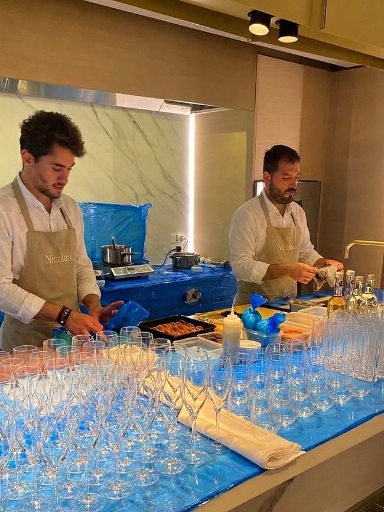
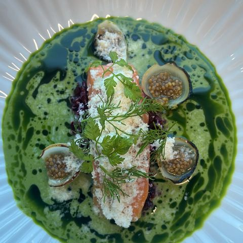
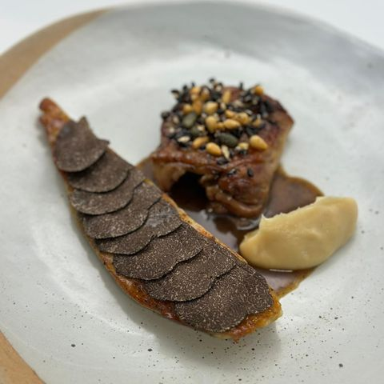
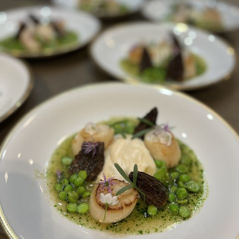
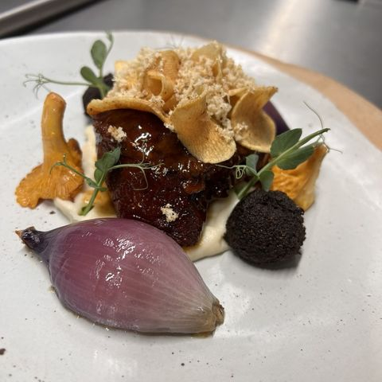
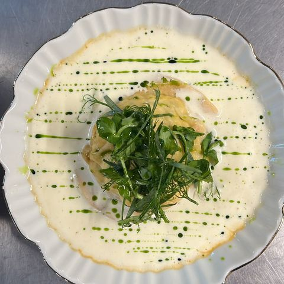
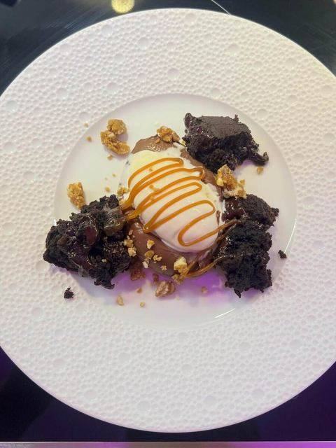

The Journal
Guides, ideas and behind-the-scenes insight on private chef dining in London — from yacht charters and Spanish tasting menus to meal prep, weddings and gala dinners.
Latest Articles

How Much Does a Private Chef Cost in London? A 2026 Guide
What actually drives the cost of hiring a private chef in London — from guest count to menu style — and how to get an accurate quote for your event.

What Actually Affects a Private Chef's Price? 7 Real Factors
Guest count, menu style, sourcing, staffing and travel — a breakdown of the seven factors that genuinely determine what a private chef costs.

Private Chef vs Catering Company: Which Costs More?
A clear comparison of how private chef pricing compares to catering companies — and which one actually suits your event better.

Hidden Costs to Ask About Before Booking a Private Chef
The questions that reveal whether a private chef quote is truly all-inclusive, so there are no surprises on the night of your event.
How to Hire a Private Chef in London: A Step-by-Step Guide
From first enquiry to the night of your event — the full process of hiring a private chef in London, explained step by step.

10 Questions to Ask a Private Chef Before Booking
The questions experienced hosts ask before hiring a private chef, covering menu, sourcing, allergies, and what actually happens on the night.

What Does a Private Chef Do at a Dinner Party?
A walkthrough of what a private chef actually does before, during and after your dinner party — from planning to clean-up.

Do You Tip a Private Chef? UK Etiquette Explained
Is tipping expected when you hire a private chef in the UK? A clear, honest answer to a question most hosts are too polite to ask.

How Far in Advance Should You Book a Private Chef?
A realistic timeline for booking a private chef in London, from a simple dinner party to a large event during peak season.

Private Chef and Dietary Requirements: How Allergies Are Handled
How an experienced private chef manages allergies and dietary requirements across a table, without compromising on flavour or safety.

What Does a Yacht Chef Actually Do On Board?
A look inside the role of a private yacht chef — provisioning, galley work, and cooking for guests and crew at sea.

STCW Certification and What It Means for Your Yacht Chef
What STCW certification is, why it matters for a private yacht chef, and what it means for the safety of your charter.
How Provisioning Works for a Private Yacht Menu
How a yacht chef plans, sources and stocks a galley for a private charter — and why provisioning is where great yacht menus start.
Best Time to Book a Private Chef for the Mediterranean Season
When to start planning a yacht chef booking for the Mediterranean charter season, and why timing affects both quality and availability.

Hiring a Spanish Private Chef in London
What sets a genuinely Spanish private chef apart in London, and what to expect from an authentic tapas and paella-led menu.

Authentic Spanish Tasting Menus in London: What to Expect
What an authentic Spanish tasting menu looks like — from pintxos to paella — and how it's structured for a private event.

Pintxos vs Tapas: What's Actually the Difference?
Pintxos and tapas are often used interchangeably — here's the real distinction between the two, and why it matters for your menu.

Best Spanish Dishes for a Dinner Party at Home
The Spanish dishes that work best for hosting at home, from easy crowd-pleasers to a proper paella centrepiece.
Training in San Sebastián: How It Shapes a Chef's Cooking
Why San Sebastián is one of the world's most respected culinary training grounds, and how it shapes a chef's approach to food.

How Many Bartenders Do You Need for 50 Guests?
A practical guide to bartender-to-guest ratios for private events, so your bar keeps up without unnecessary extra staffing cost.

How to Plan a Cocktail Menu for a Private Party
A practical approach to building a cocktail menu for a private event, from guest preferences to a manageable, well-balanced list.

What Makes a Great Welcome Cocktail for an Event
The qualities that make a welcome cocktail work well at a private event, and how to choose the right one for your guests.

Open Bar vs Limited Bar: What to Choose for Your Event
The practical differences between an open bar and a limited bar for a private event, and how to decide which suits your evening.

Private Chef Meal Prep in London: How It Works
How a private chef meal prep service actually works, from planning to delivery, and what to expect week to week.

How Much Protein Do You Actually Need Per Meal?
A clear, evidence-based look at how much protein per meal actually supports muscle maintenance and growth.

Meal Prep Delivery vs a Private Chef: Which Is Right for You?
How meal prep delivery services compare to a private chef meal prep service, and which one actually fits your lifestyle.

What a Balanced High-Protein Meal Actually Looks Like
Beyond just adding more protein — what a genuinely balanced, high-protein meal includes, and why the whole plate matters.

How a Private Chef Plans a Week of Meals Around Your Macros
How a private chef translates your macro and nutrition goals into an actual week of varied, enjoyable meals.

Private Chef for a House Party: What Actually Happens on the Night
A realistic look at what having a private chef at your house party actually looks like, from setup to the last course.

Planning a Gala Dinner: A Host's Checklist
The key elements to plan for when hosting a gala dinner, from menu and staffing to timing and guest experience.

Corporate Dinner Etiquette: What to Brief Your Chef On
The details worth briefing a private chef on ahead of a corporate dinner, so the evening reflects well on your business.

Private Chef for a Family Celebration: Making It Personal
How a private chef builds a menu around a family celebration's real story, not just the occasion label on the invitation.

Small Group, Big Detail: What Makes an Intimate Dinner Work
Why intimate dinners for small groups reward extra attention to detail, and how to make the most of a smaller guest list.
Private Chef vs Personal Chef: What's the Difference?
The terms are often used interchangeably, but there's a real distinction between a private chef and a personal chef.

What's the Difference Between a Private Chef and a Caterer?
Private chef or caterer — the practical differences in how each works, and which suits different types of events.
How a Tasting Menu Is Designed From Scratch
The process behind building a tasting menu, from initial concept through to the finished, balanced sequence of courses.

Seasonal Menu Planning: Why It Matters for a Private Chef
Why building a menu around seasonal ingredients leads to better food, and how it shapes private chef menu planning.
What to Expect at a Private Chef Tasting/Consultation
What actually happens during a private chef consultation, and how it helps shape the final menu for your event.

How a Private Chef Sources Ingredients
Where quality ingredients for a private chef menu actually come from, and why sourcing shapes the whole dining experience.
Wine and Menu Pairing for a Private Dinner
How wine pairing works for a private dinner menu, and what to consider when planning drinks alongside your courses.

Cooking for Food Allergies Without Compromising on Flavour
How a private chef designs allergy-friendly dishes that taste just as good as the rest of the menu, not a lesser substitute.

What Kitchen Equipment a Private Chef Brings (And What They Need From You)
What equipment a private chef typically brings to your home, and what's usually expected from your own kitchen.

Private Chef for a Milestone Birthday: Ideas That Work
How to plan a milestone birthday menu with a private chef, from personal touches to the right format for the occasion.

How to Brief a Private Chef for a Surprise Event
How to plan a surprise event with a private chef while keeping the details genuinely secret from the guest of honour.

The Etiquette of Hosting With a Private Chef in Your Home
A practical guide to hosting etiquette when a private chef is cooking in your home, for a smoother, more comfortable evening.

Private Chef for New Year's Eve: Planning Ahead
Why New Year's Eve bookings fill up fast, and how to plan a private chef menu for one of the year's busiest nights.

Private Chef for Christmas and Festive Dinners
How a private chef takes the pressure off Christmas Day and festive entertaining, with a menu built around tradition and ease.
Behind the Scenes: A Day in the Life of a Private Chef
What a working day actually looks like for a private chef in London, from morning sourcing to the final course served.

The Story Behind Spain's Michelin-Trained Chefs
What makes Spain's Michelin-starred culinary tradition, shaped by chefs like Martín Berasategui, so influential worldwide.

Private Chef for an Anniversary Dinner: Romantic Menu Ideas
How to plan a romantic anniversary dinner with a private chef, from intimate menu ideas to setting the right atmosphere.